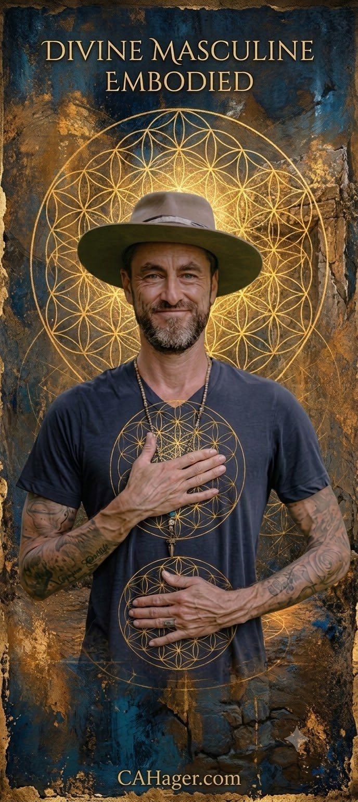

A prayer he wrote
Divine MasculinePrayer of Remembering
Christopher Hager · since June 23, 2023
I have seen a vision of my highest self, and it is presenting such a fantastic embodiment of the divine masculine, in this incarnation, that I must speak these words as a prayer of remembering and say, thank you, thank you, thank you! I say this prayer with all the grace and gratitude I can summon, for the prayer has already been answered...
I am a kind and powerful man, yet I don't diminish or humiliate others to show this power. It is a quiet confidence and a presence that emanates from me. I do not engage in boasting; instead, my actions align seamlessly with my words.
I am truly a man of service who does the right thing because I act from a space of integrity. I take what I believe is the right action, regardless if I'm alone or in the mix of a crowd. The eyes of others never dissuade my decisions because of what they "may or may not" think of me. I am so confident in who I am that I never waver from this path. I understand my impact on others and how my actions may inspire them to be a more genuine version of themselves just by witnessing me living in my full embodiment.
I have a level of calm throughout the chaos, a true warrior's mindset. Despite all the bullets that have been fired in my direction and storms that have raged around me, I never let the external chaos impact my inner peace. I am not afraid to put myself in harm's way to help others find safety or stand up for those who cannot protect themselves. I also understand the difference between the sounds of danger and the boom of thunder from an oncoming storm. I don't reach for my weapon when I hear this but rather my dancing shoes so we can all celebrate the coming rain.
I serve as a calming presence for all those in my life and, to many, a fatherly figure to those who seek my wisdom, both older and younger. I view other people in this same light, not relying solely on their insight to make my decisions, yet, I always keep an open heart when it comes to the experience of others and allow their perspective to be a part of my process.
It brings me great joy to be around my children and other kids as I watch their faces light up with all the possibilities the universe has to offer. I love to be silly and get into my imagination and into the imagination of those around me. I create space for my inner child because I have long since recognized the importance of play, joy, fun, creativity, and curiosity. I seek to help others connect to their inner child as well.
Those times, I find myself quick to anger, and I'm even quicker to deliver an apology. I take great pride in owning up to my side of the mess and, as a result, model this behavior for all those in my presence.
I am an incredible partner, friend, and family man. Who is loved by all who truly SEE me; my charisma, character, patience, leadership, laughter, and love are so abundant that it's undeniable to those who cross my path. I don't use these traits haphazardly or manipulate those around me.
I am trustworthy, open, and honest about My feelings, intentions, my past, and commitment to God, my family, and my role in the universe. I don't identify with the mask of the lover or even that of the great husband, friend, or father, but simply embody all those qualities. Love remains my North Star and My foundation is built on Truth, Service, Integrity, and Compassion.
I love my Pixie (partner), and she loves me. I understand how to support the Divine Feminine, My very presence is enough, like that of the mountain 🏔️, to listen and receive any expression that may come through. At times I create space for her to be on her own, giving her the chance to connect with her own higher power. Or encouraging her to speak her truth and share her wisdom with others.
I am not afraid of my tears or the tears of others. I see them as holy water, a true gift from God, as connecting to our emotions is an amazing & beautiful expression of our humanity. I welcome all sides of the journey and see the light and darkness in Myself and others as a Divine work of art.
I love spending time in nature and being in harmony with it. This brings me a sense of ease and balance. I find great joy in being surrounded by my family and friends. And bonding with them through music, meditation, dance, laughter, exercise, storytelling, ceremonies, celebrations, prayers, sharing meals and helping others. I make it a point to spread whatever love, light, and wisdom I can into the universe by any means necessary.
I receive as freely and fully as I give. I release the belief that my worth is measured only by what I pour out toward others. I am not just the guide. I am also the one who is guided, held, and replenished. I allow the abundance of the universe to move through me in all directions, not just outward, but inward, back toward this body, this life, and this heart. I am a vessel worthy of being filled, and today I am open to receive everything God has been conspiring to send my way.
I trust the power that moves through me. I no longer watch it out of fear, because it is rooted in love. I recognize myself as a divine being experiencing itself through form, not separate from God, not inflated by ego, not diminished by false modesty. I do not shrink my light to belong, and I do not exaggerate it to be seen. I stand where I am, fully. I accept my humanity, my personality, and my ego as part of this expression, and I let devotion, not humility, guide my actions. I offer my gifts freely, responsibly, and without apology. What moves through me serves life. And I trust myself to carry it.
I accept things as they come to me without spending time saying, "I wish it turned out differently." Instead, I look for the lesson in everything and how it can help me and those around me. I have a vision for what I want in the world but I'm not attached to it. I remain malleable and flexible as things come into My awareness & into the collective consciousness.
I have surrendered entirely to my healing power and wisdom; allowing me to transcend the limitations of the 3D world and proclaim my magic daily in any situation. I speak about channeling, manifestation, telepathy, Universal Intelligence, and all the healing and beautiful things I have seen, felt, and experienced without reservation or fear of being judged; I see no reason to hide my truth; I am always my authentic self.
My heart and integrity resonate deeply when I speak, touching the souls of all those who listen.
I don't spend any time worrying about the "how." I've surrendered entirely to the Divine Creator and allow this life to unfold before me. I understand that words are spells so when I speak my voice is heartfelt and truthful; as I seek to cast spells that manifest more beauty, love, and positivity into being.
Amen 🙏🏽
Aho 💜
Aṣẹ ⚡
CAHager.com